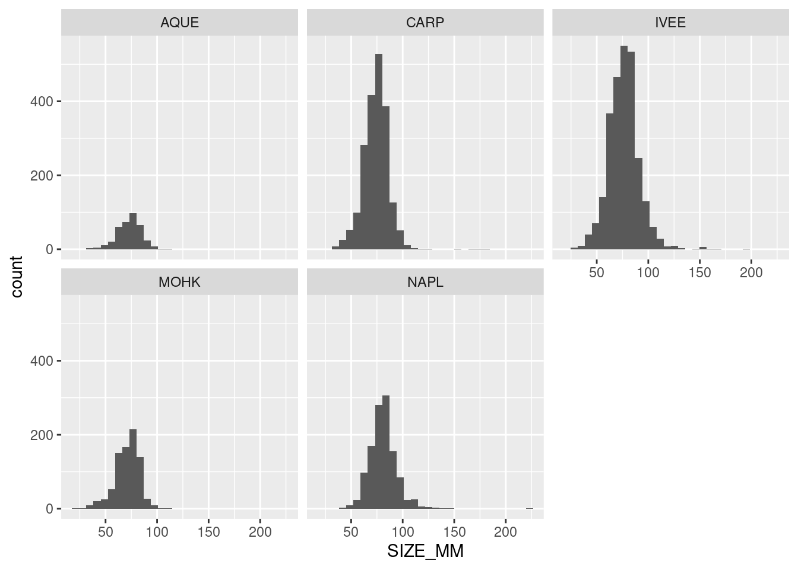
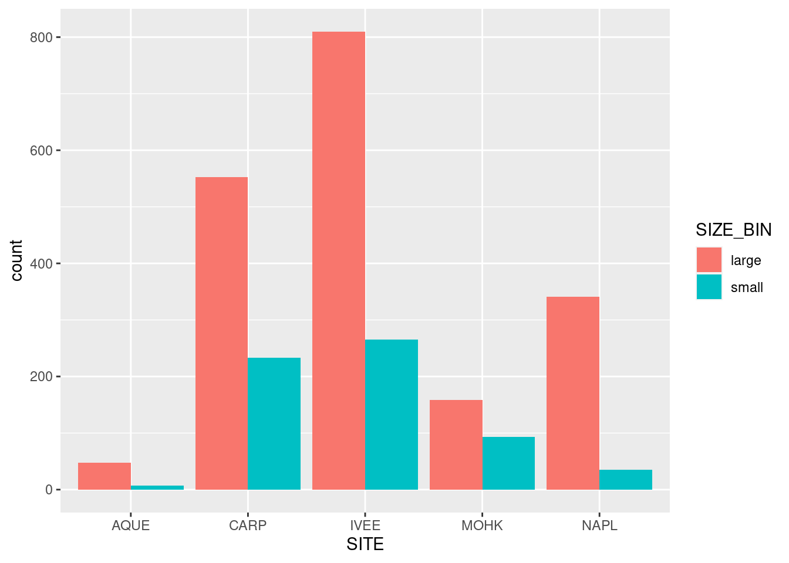
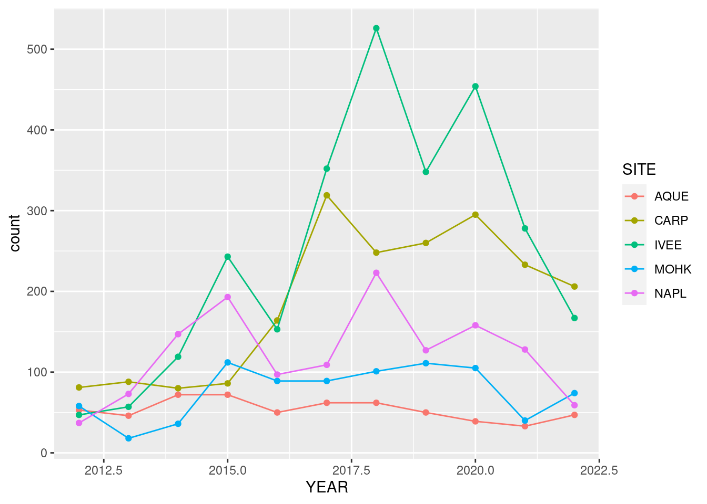
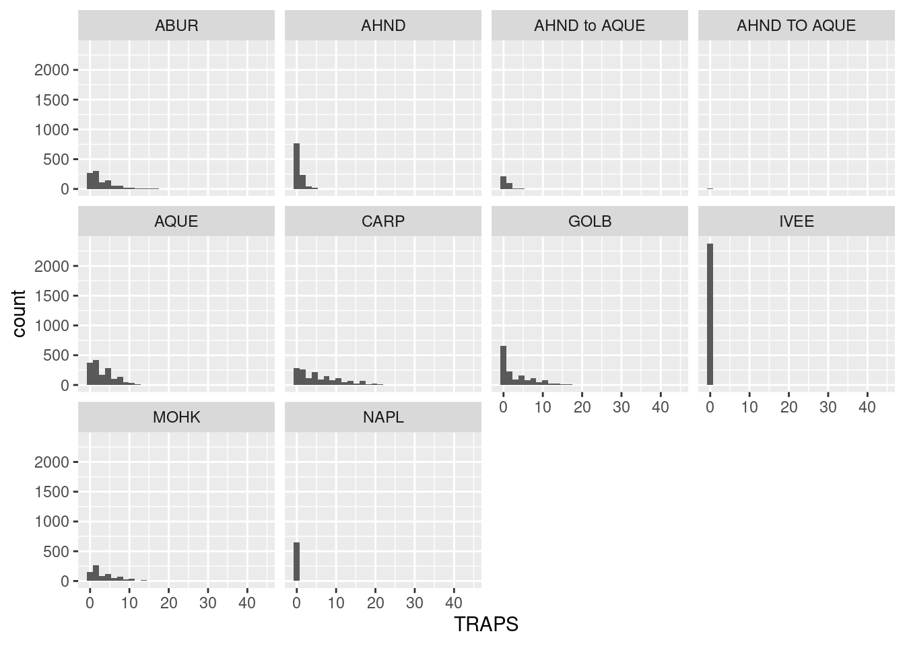
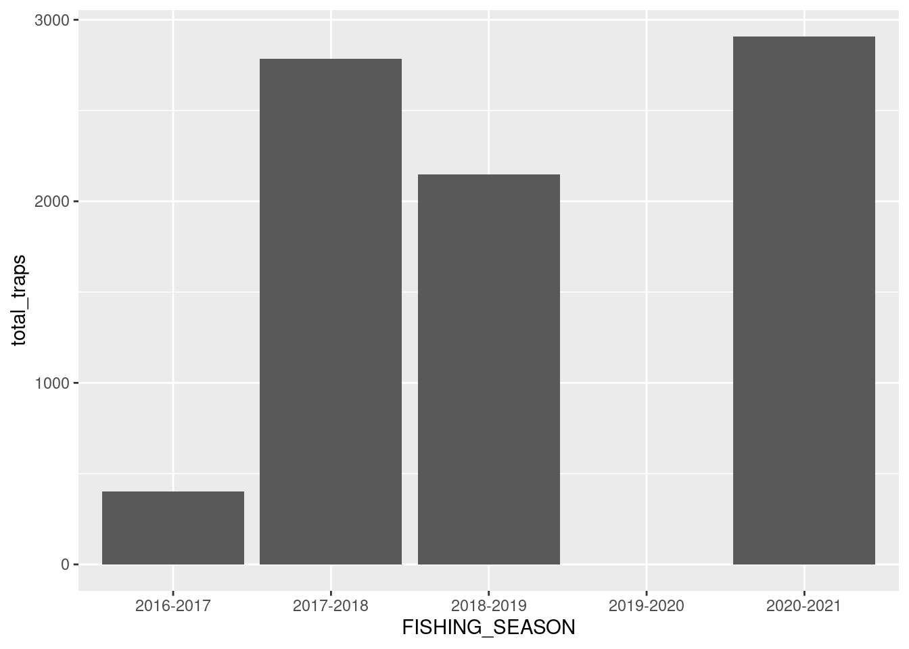
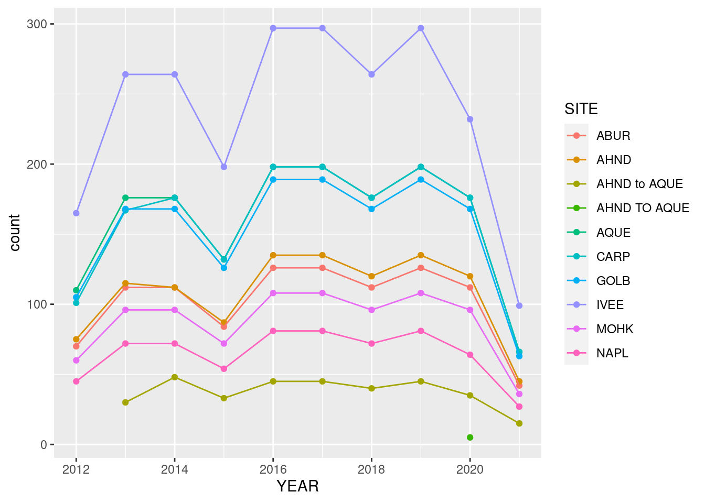

library(readr)
library(dplyr)
library(ggplot2)
library(tidyr)Learning Objectives
- Practice using common cleaning and wrangling functions
- Practice creating plots using common visualization functions in
ggplot - Practice saving and sharing data visualizations
Acknowledgements
These exercises are adapted from Allison Horst’s EDS 221: Scientific Programming Essentials Course for the Bren School’s Master of Environmental Data Science program.
About the data
These exercises will be using data on abundance, size, and trap counts (fishing pressure) of California spiny lobster (Panulirus interruptus) and were collected along the mainland coast of the Santa Barbara Channel by Santa Barbara Coastal LTER researchers [@lter2022].
13.1 Exercise: Collaborate on an analysis and create a report to publish using GitHub Pages
Setup
- Create a new repository with a partner
- Determine who is the owner and who is the collaborator
- The owner creates a repository on GitHub titled with both your names (i.e. If Halina and Camila were partners, and Halina is the owner, she would create a repo called
halina-camila)- When creating the repository, add a brief description (i.e. coreR R Practice Session: Collaborating on, Wrangling & Visualizing Data), keep the repo Public, and Initialize the repo with a
READMEfile and an R.gitignoretemplate.
- When creating the repository, add a brief description (i.e. coreR R Practice Session: Collaborating on, Wrangling & Visualizing Data), keep the repo Public, and Initialize the repo with a
- The owner adds the collaborator to the repo
- Both the collaborator and the owner clone the repo into their RStudio
Step 2 and Step 3 are meant to be completed at the same time. Step 2 is for the collaborator to complete, and Step 3 is for the owner to complete.
- Collaborator creates new files for exercise
- The collaborator creates the following R Markdown files that will be used in the exercise:
- Title it: “Owner Analysis” and save it as:
owner-analysis.Rmd - Title it: “Collaborator Analysis” and save it as:
collaborator-analysis.Rmd - Title it: “Lobster Report” and save it as:
lobster-report.Rmd
- Title it: “Owner Analysis” and save it as:
- After creating the files, the collaborator will
stage,commit, write a commit message, andpushthe files to the remote repository (on github) - The owner pulls the changes and R Markdown files into their local repository (their workspace)
- The collaborator creates the following R Markdown files that will be used in the exercise:
- Owner downloads data from the EDI Data Portal SBC LTER: Reef: Abundance, size and fishing effort for California Spiny Lobster (Panulirus interruptus), ongoing since 2012.
- Create two new folders one called
dataand one calledfigs - Download the following datasets and upload them to the
datafolder:- Time-series of lobster abundance and size
- Time-series of lobster trap buoy counts
- After creating the
datafolder and adding the datasets, the owner willstage,commit, write a commit message, andpushthe files to the remote repository (on github) - The collaborator pulls the changes and datasets into their local repository (their workspace)
- Create two new folders one called
13.1.1 Explore, clean and wrangle data
For this portion of the exercise, the owner will be working with the lobster abundance and size dataset, and the collaborator will be working with the lobster trap buoy counts dataset.
Setup
- Open the R Markdown file
owner-analysis.Rmd- Check the
YAMLand add your name to theauthorfield
- Check the
- Load the following libraries at the top of your R Markdown file.
- Read in the dataset and store the data frame as
lobster_abundance
lobster_abundance <- read_csv("data/Lobster_Abundance_All_Years_20220829.csv")13.2 Convert missing values using mutate() and na_if()
Question 1
The variable SIZE_MM uses -99999 as the code for missing values (see metadata or use unique()). This has the potential to cause conflicts with our analyses, so let’s convert -99999 to an NA value. Do this using mutate() and na_if(). Look up the help page to see how to use na_if().
Answer
lobster_abundance <- lobster_abundance %>%
mutate(SIZE_MM = na_if(SIZE_MM, -99999))13.3 filter() practice
Question 2
Create and store a subset that does NOT include observations from Naples Reef (NAPL). Check your output data frame to ensure that NAPL is NOT in the data frame.
Answer
not_napl <- lobster_abundance %>%
filter(SITE != "NAPL")
Question 3
Create and store a subset with lobsters at Arroyo Quemado (AQUE) OR with a carapace length greater than 70 mm. Check your output.
Answer
aque_70mm <- lobster_abundance %>%
filter(SITE == "AQUE", SIZE_MM >= 70)13.4 mutate() practice
Question 4
Add a new column that contains lobster carapace length converted to centimeters. There are 10 millimeters in 1 centimeter. Check your output.
Answer
lobster_cm <- lobster_abundance %>%
mutate(SIZE_CM = SIZE_MM / 10)13.5 group_by() %>% summarize() practice
Question 5
Find the mean using mean() of lobster carapace length, grouped by SITE. Think about how you want to treat the NA values in SIZE_MM (Hint: check the arguments in mean()).
Answer
lobster_mean <- lobster_abundance %>%
group_by(SITE) %>%
summarize(MEAN_LENGTH = mean(SIZE_MM, na.rm = TRUE))
Question 6
Find the maximum carapace length using max() and group by SITE and MONTH.
Answer
max_lobster <- lobster_abundance %>%
group_by(SITE, MONTH) %>%
summarize(MAX_LENGTH = max(SIZE_MM, na.rm = TRUE))
Setup
- Open the R Markdown file
collaborator-analysis.Rmd- Check the
YAMLand add your name to theauthorfield
- Check the
- Load the following libraries at the top of your R Markdown file.
library(readr)
library(dplyr)
library(ggplot2)
library(tidyr)- Read in the dataset and store the data frame as
lobster_traps
lobster_traps <- read_csv("https://portal.edirepository.org/nis/dataviewer?packageid=knb-lter-sbc.77.8&entityid=66dd61c75bda17c23a3bce458c56ed84")
# lobster_traps <- read_csv("data/Lobster_Trap_Counts_All_Years_20210519.csv")13.6 Convert missing values using mutate() and na_if()
Question 1
The variable TRAPS uses -99999 as the code for missing values (see metadata or use unique()). This has the potential to cause conflicts with our analyses, so let’s convert -99999 to an NA value. Do this using mutate() and na_if(). Look up the help page to see how to use na_if().
Answer
lobster_traps <- lobster_traps %>%
mutate(TRAPS = na_if(TRAPS, -99999))13.7 filter() practice
Question 2
Create and store a subset that does NOT include observations from Naples Reef (NAPL). Check your output data frame to ensure that NAPL is NOT in the data frame.
Answer
not_napl <- lobster_traps %>%
filter(SITE != "NAPL")
Question 3
Create and store a subset with lobsters at Carpinteria Reef (CARP) OR number of commercial trap floats is greater than 20. Check your output.
Answer
carp_20_traps <- lobster_traps %>%
filter(SITE == "CARP", TRAPS > 20)13.8 mutate() practice
Question 4
Using the object you created above (we called it carp_20_traps), add a new column that contains the proportion of lobster traps at site CARP. The total number you are using in your percent calculation is 801. Check your output.
Answer
# total number of traps at site "CARP" and more than 20 traps counted
lobster_carp_total <- sum(carp_20_traps$TRAPS, na.rm = TRUE)
lobster_percent <- carp_20_traps %>%
mutate(PERCENT_TRAPS = (TRAPS / lobster_carp_total) * 100)13.9 group_by() %>% summarize() practice
Question 5
Find the mean using mean() of lobster commercial trap floats, grouped by SITE. Think about how you want to treat the NA values in TRAPS (Hint: check the arguments in mean()).
Answer
mean_lobster_traps <- lobster_traps %>%
group_by(SITE) %>%
summarize(MEAN_TRAPS = mean(TRAPS, na.rm = TRUE))
Question 6
Find the maximum number of commercial trap floats using max() and group by SITE and MONTH.
Answer
max_lobster_traps <- lobster_traps %>%
group_by(SITE, MONTH) %>%
summarize(MAX_TRAPS = max(TRAPS, na.rm = TRUE))13.9.1 Create visually appealing and informative data visualization
NOTES: - add a ggsave step - add instructions: FIRST you’re going to create the subsets you need to create the visualizations, THEN you’re going to make the graphs pretty - code fold graph outputs; add text “your graph should look something like this”
Question 7
Create a multi-panel plot of lobster carapace length (SIZE_MM) using ggplot(), geom_histogram(), and facet_wrap(). Use the variable SITE in facet_wrap().
Answer
lobster_abundance <- read_csv("https://portal.edirepository.org/nis/dataviewer?packageid=knb-lter-sbc.77.8&entityid=f32823fba432f58f66c06b589b7efac6") %>%
mutate(SIZE_MM = na_if(SIZE_MM, -99999))
ggplot(data = lobster_abundance, aes(x = SIZE_MM)) +
geom_histogram() +
facet_wrap(~SITE)
Question 8
Create a bar graph that shows the amount of small and large sized carapace lobsters at each SITE from 2019-2021.
First, you’ll need to create a new dataset subset:
filter()for the years 2019, 2020, and 2021- Add a new column called
SIZE_BINthat contains the values “small” or “large”. A “small” carapace size is <= 70 mm, and a “large” carapace size is greater than 70 mm. Usemutate()andif_else(). Check your output - Remove the
NAvalues from the subsetted data. Hint: check outdrop_na(). Check your output
Answer
lobster_size_lrg <- lobster_abundance %>%
filter(YEAR %in% c(2019, 2020, 2021)) %>%
mutate(SIZE_BIN = if_else(SIZE_MM <= 70, true = "small", false = "large")) %>%
drop_na()Next, create a bar graph using ggplot() and geom_bar(). Note that geom_bar() automatically creates a stacked bar chart. Try using the argument position = "dodge" to make the bars side by side. Pick which bar position you like best.
Answer
ggplot(data = lobster_size_lrg, aes(x = SITE, fill = SIZE_BIN)) +
geom_bar(position = "dodge")
Question 9
Create a ggplot graph of the number of total lobsters observed (y-axis) by year (x-axis) in the study, grouped by SITE
First, you’ll need to create a new dataset subset:
- Group the data by
SITEANDYEAR - Calculate
13.10 Create a summary table that finds the total counts (see: n()), and mean carapace lengths of lobsters observed in the dataset by site and year.
Answer
lobsters_summarize <- lobster_abundance %>%
group_by(SITE, YEAR) %>%
summarize(mean_lobster_length = mean(SIZE_MM, na.rm = TRUE),
count = n()) %>%
ungroup()`summarise()` has grouped output by 'SITE'. You can override using the
`.groups` argument.Answer
ggplot(data = lobsters_summarize, aes(x = YEAR, y = count)) +
geom_point(aes(color = SITE)) +
geom_line(aes(color = SITE)) 
13.11 Bonus
Take the subset lobster_size and add a new column called DESIGNATION that contains “MPA” if the site is “IVEE” or “NAPL”, and “not MPA” for all other outcomes.
Answer
lobster_mpa <- lobster_size_lrg %>%
mutate(DESIGNATION = if_else(SITE %in% c("IVEE", "NAPL"), true = "MPA", false = "not MPA")) %>%
select(c("YEAR", "SITE", "SIZE_MM", "SIZE_BIN", "DESIGNATION"))What mpa has the largest
Answer
ggplot(data = lobster_mpa, aes(x = SITE, Y = SIZE_BIN, fill = DESIGNATION)) +
geom_bar(position = "dodge")Answer
lobster_legal <- lobster_abundance %>%
filter(YEAR %in% c(2019, 2020, 2021)) %>%
mutate(LEGAL = if_else(SIZE_MM > 79.76, true = "yes", false = "no")) %>%
drop_na()
ggplot(data = lobster_legal, aes(x = SITE, fill = LEGAL)) +
geom_bar(position = "dodge")NOTES: - add a ggsave step - add instructions: FIRST you’re going to create the subsets you need to create the visualizations, THEN you’re going to make the graphs pretty - code fold graph outputs; add text “your graph should look something like this”
Question 7
Create a multi-panel plot of lobster carapace length (SIZE_MM) using ggplot(), geom_histogram(), and facet_wrap(). Use the variable SITE in facet_wrap().
Answer
library(readr)
library(dplyr)
library(ggplot2)
library(tidyr)
lobster_traps <- read_csv("https://portal.edirepository.org/nis/dataviewer?packageid=knb-lter-sbc.77.8&entityid=66dd61c75bda17c23a3bce458c56ed84") %>%
mutate(TRAPS = na_if(TRAPS, -99999))
ggplot(data = lobster_traps, aes(x = TRAPS)) +
geom_histogram() +
facet_wrap(~SITE)
Question 8
Create a bar graph that shows the amount of small and large sized carapace lobsters at each SITE from 2019-2021.
First, you’ll need to create a new dataset subset:
filter()for the years 2019, 2020, and 2021- Add a new column called
SIZE_BINthat contains the values “small” or “large”. A “small” carapace size is <= 70 mm, and a “large” carapace size is greater than 70 mm. Usemutate()andif_else(). Check your output - Remove the
NAvalues from the subsetted data. Hint: check outdrop_na(). Check your output
Answer
lobster_traps_5yrs <- lobster_traps %>%
filter(YEAR %in% c(2017, 2018, 2019, 2020, 2021)) %>%
group_by(FISHING_SEASON) %>%
summarize(total_traps = sum(TRAPS))Next, create a bar graph using ggplot() and geom_bar(). Note that geom_bar() automatically creates a stacked bar chart. Try using the argument position = "dodge" to make the bars side by side. Pick which bar position you like best.
Answer
# total number of traps at each site from the past three years
ggplot(data = lobster_traps_5yrs, aes(x = FISHING_SEASON, y = total_traps)) +
geom_bar(stat = "identity")Warning: Removed 1 rows containing missing values (`position_stack()`).
Question 9
Create a ggplot graph of the number of total lobsters observed (y-axis) by year (x-axis) in the study, grouped by SITE
First, you’ll need to create a new dataset subset:
- Group the data by
SITEANDYEAR - Calculate
13.12 Create a summary table that finds the total counts (see: n()), and mean carapace lengths of lobsters observed in the dataset by site and year.
Answer
lobsters_traps_summarize <- lobster_traps %>%
group_by(SITE, YEAR) %>%
summarize(count = n()) %>%
ungroup()`summarise()` has grouped output by 'SITE'. You can override using the
`.groups` argument.Answer
ggplot(data = lobsters_traps_summarize, aes(x = YEAR, y = count)) +
geom_point(aes(color = SITE)) +
geom_line(aes(color = SITE)) 
13.13 Bonus
Take the subset lobster_size and add a new column called DESIGNATION that contains “MPA” if the site is “IVEE” or “NAPL”, and “not MPA” for all other outcomes.
Answer
lobster_traps_mpa <- lobster_traps %>%
mutate(DESIGNATION = if_else(SITE %in% c("IVEE", "NAPL"), true = "MPA", false = "not MPA")) %>%
select(c("YEAR", "FISHING_SEASON", "SITE", "TRAPS", "DESIGNATION")) %>%
filter(YEAR %in% c(2019, 2020, 2021))What mpa has the largest
Answer
ggplot(data = lobster_traps_mpa, aes(x = YEAR, Y = TRAPS, fill = DESIGNATION)) +
geom_bar(position = "dodge") +
facet_wrap(~SITE)13.13.1 Collaborate on a report and publish using GitHub pages
Make sure your R Markdown is well organized and includes the following elements:
- citation of the data
- summary of the abstract
- owner analysis and visualization
- collaborator analysis and visualization
- code review!
- publish on github pages (from owner’s repository)
13.14 Bonus Questions
library(readr)
library(dplyr)
library(here)
library(tidyverse)
library(janitor)testing test
library(readr)
library(dplyr)
library(here)
library(tidyverse)
library(janitor)